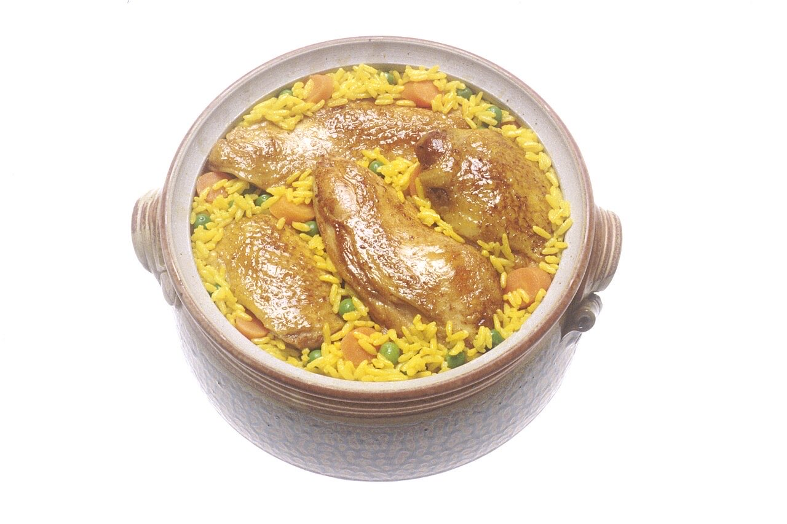
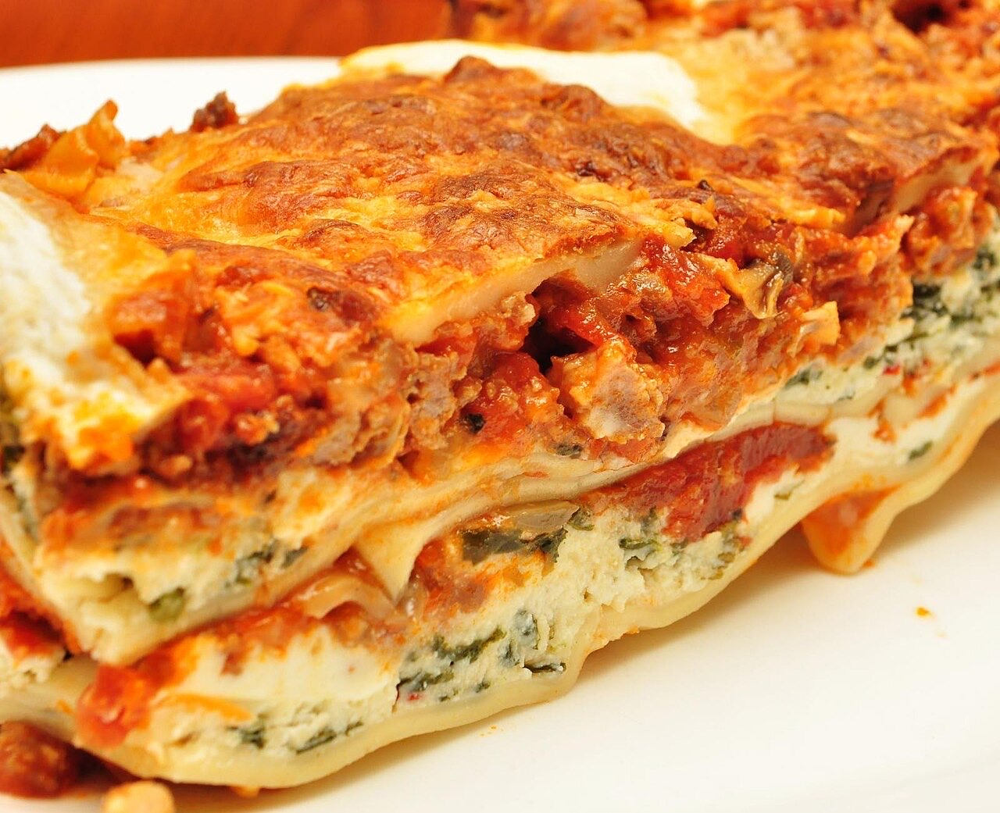

Fotografias ilustrativas — no site final usamos as vossas.
Comida para levar · Guimarães
Comida para levar, sem chamadas
Envie o pedido por mensagem e passe a levantar.
4,7★ em 72 avaliações no Google.
Take-away no Retail Park, para o almoço ou jantar em casa.
Os Salpicos da Cozinha fazem comida para levar no Retail Park, na Rua da Indústria, em Guimarães. Encomende por WhatsApp e passe só para levantar.


Fotografias ilustrativas — no site final usamos as vossas.
Encomenda
Diga o que precisa e quando quer levantar (ou receber). Respondemos por WhatsApp.
↑ Assim chegaria a mensagem ao vosso WhatsApp. (Nesta demonstração nada é enviado.)
Onde estamos
Proposta para Salpicos da Cozinha
Esta página foi feita de propósito para Salpicos da Cozinha por João Machado, programador web aqui de Guimarães. Inclui:
Eu trato do alojamento e da manutenção. Sem compromisso.